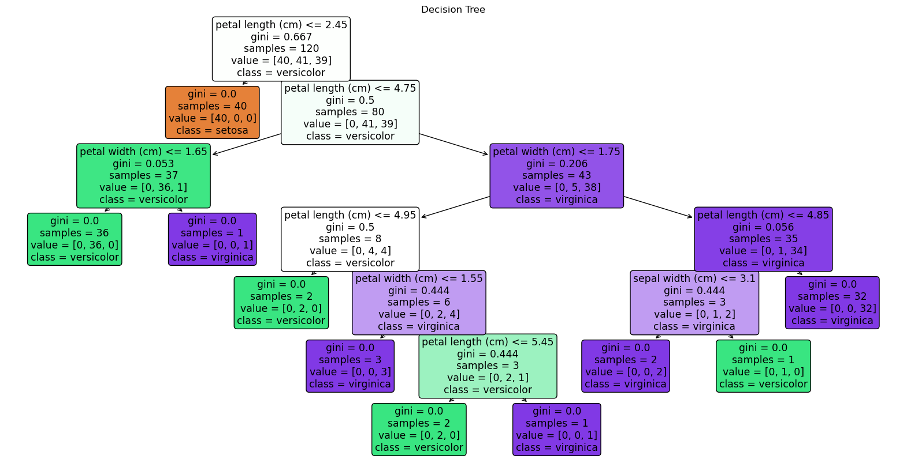

Decision Tree
Decision Trees
Decision Trees are a type of supervised learning algorithm used for classification and regression tasks. They work by recursively splitting the data into subsets based on the value of input features, creating a tree-like structure.
Decision Trees are easy to interpret and visualize, making them a popular choice for many applications. However, they can be prone to overfitting, especially when the tree is deep. (i.e. in this example)
Random Forests are an ensemble learning method that combines multiple decision trees to improve classification accuracy and reduce overfitting. Each tree in the forest is trained on a random subset of the data, and the final prediction is made by aggregating the predictions of all trees.
The data that we are using is the same here, this is good for reproducibility and allows for a comparison between multiple different algorithms and see more clearly how they perform.
Iris Dataset Decision Tree for Sanity Check
Here is an example of how a decision tree looks:
For the above picture I am using the very popular iris dataset to show that Decision Tree does work, when the data is *pefectly* made for algorithm:
Enjoy what a perfect confusion matrix looks like on data that is not commonly found in nature:

Its nice when we get 100% accuracies, huh!
Back to climate-related text data!
Here is an example of how my cm looks:

A whopping 7% accraucy, only for one class too. Keep in mind this data is 100% balanced.
Feature Importance:

This is interesting! We are getting politics, ("politics","desantis") religeon, science ("noaa", "graph") and a plethora of other interesting words used as the feature importance.
It is interesting to see that the model is picking up on these words, but it is not able to make a good prediction. This is likely due to the complexity of the data and the limitations of the decision tree algorithm.
Overfitted, not accurate decisison tree:

In conclusion, Decision Trees are a powerful tool for classification tasks, but they can be sensitive to the data and may not always perform well on complex datasets. In this case, the model was not able to make accurate predictions on the climate-related text data.
look at my code and data collected on my github here:
GitHub Code